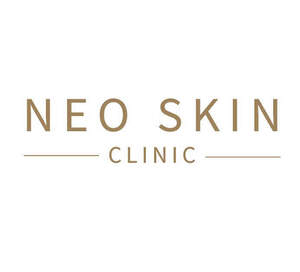

Trade Mark Journal No.2025/033 15 August 2025
UK00004209346 27 May 2025 (3,35,44)

- Class 3
- Skin moisturizer; Skin cleansing cream; Creams (Skin whitening -); Creams (Cosmetic -); Suntan creams; Skin whitening creams; Skin cleansing cream [non-medicated]; Cosmetic creams; Sun-tanning creams and lotions; Skin lotion; Sunscreen creams; Skin hydrators; Anti-aging serum for cosmetic use; Non-medicated creams; Anti-aging moisturizers; Skin cleansers; Softening cleanser [cosmetic]; Eye correction serum; Beauty serums; Anti-ageing moisturiser; Sheet masks for cosmetic purposes; Moisturising creams; After-sun creams; Skin moisturiser; Creams for the skin; Skin hydrators being injectable dermal fillers; Skin moisturizers; Facial cleansers; Skin masks; Non-medicated skin serums; Beauty serums with anti-ageing properties; Skin cleansing foams; Exfoliant creams; Anti-ageing creams; Facial serum for cosmetic use; Skin moisturizer masks; Skin creams; Moisturizing creams; Sunscreen creams [for cosmetic use]; Anti-wrinkle creams [for cosmetic use]; Cleansing balm; Moisturizing milk; Anti-aging creams; Skin calming serum; Skin relief serum [cosmetic]; Anti-ageing serum; Moisturising creams, lotions and gels; Skin moisturizers used as cosmetics; Anti-ageing creams [for cosmetic use]; Cleansing creams; Beauty creams; Acne cleansers, cosmetic; Facial creams; Skin moisturisers; Skin creams [non-medicated]; Exfoliating creams; Non-medicated skin creams; Cosmetic creams and lotions; Anti-wrinkle creams.
- Class 35
- Advertising; Advertising and marketing consultancy; On-line advertising; Assistance in product commercialization, within the framework of a franchise contract; Hire of advertising billboards; Advertising and publicity services; Television advertising; Radio advertising; Franchising (Business advisory services relating to -); Business management assistance in the field of franchising; Assistance in business management within the framework of a franchise contract; Advice in the running of establishments as franchises; Online advertising; Advertising agencies; Business management for a trade company and for a service company; Business organisation and management consultancy; Commercial consultancy; Business advice and consultancy relating to franchising; Assistance in franchised commercial business management; Business advertising services relating to franchising; Promotional advertising services; On-line advertising and marketing services; Administration of the business affairs of franchises; Mail-order advertising; Consultancy relating to business management and organisation; Advertising services provided by a radio and television advertising agency; Advisory services (Business -) relating to the operation of franchises; Business management and consultancy; Advisory services relating to the operation of franchises; Promotional and advertising services; Promotion [advertising] of travel; Advertising and marketing; Marketing, advertising, and promotional services; Business assistance relating to starting and running a franchise; Advertising services of a radio and television advertising agency; Promotion [advertising] of business; Business advice relating to restaurant franchising; Leasing of advertising billboards; Copywriting for advertising and promotional purposes; Advertising, promotional and marketing services; Business advisory services relating to franchising of a motor dealership; Advertising and promotion services; Advertising, marketing and promotional services; Provision of assistance [business] in the establishment of franchises; Advertising copywriting; Newspaper advertising; Business advisory services relating to the establishment and operation of franchises; Cinema advertising; Marketing consultancy; Leasing of advertising hoardings; Outdoor advertising; Advertising and marketing services; Advisory services (Business -) relating to the establishment of franchises; Marketing, advertising and promotion services; Business management and organisation consultancy; Advertising and advertisement services; Recruitment advertising; Radio advertising and commercials; Magazine advertising; Banner advertising; Business planning consultancy; Advertising, marketing and promotion services; Publicity and advertising; Promotion, advertising and marketing of on-line websites; Providing assistance in the field of business management within the framework of a franchise contract; Business assistance relating to franchising; Hire of advertising hoardings; Advertising services; Providing assistance in the field of product commercialization within the framework of a franchise contract; Business consultancy services; Business consultancy; Business assistance relating to the establishment of franchises; Advertising research; Electronic billboard advertising; Business management organisation consultancy; Advertising and promotional services; Provision of assistance [business] in the operation of franchises; Advertising and publicity; Business advisory services relating to franchising; Business advice relating to franchising.
- Class 44
- Cosmetic and plastic surgery; Therapeutic treatment of the face; Therapeutic treatment of the body; Cosmetic treatment; Dermatological services for treating skin conditions; Medical services for treatment of the skin; Cosmetic treatment for the face; Beauty salons; Cosmetic facial and body treatment services; Beauty salon services; Beauty counselling; Cosmetic laser treatment of skin; Beauty spa services; Cosmetic treatment services for the body, face and hair; Beauty treatment; Salons (Beauty -); Beauty therapy services; Cellulite treatment services; Facial beauty treatment services; Cosmetic treatment for the hair; Surgery (Cosmetic -); Beauty care; Salon services (Beauty -); Cosmetic surgery services; Beauty consultation; Cosmetic treatment for the body.
NEO SKIN LIMITED